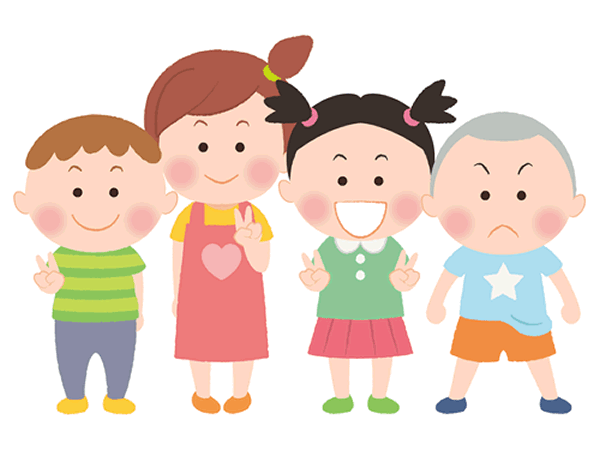
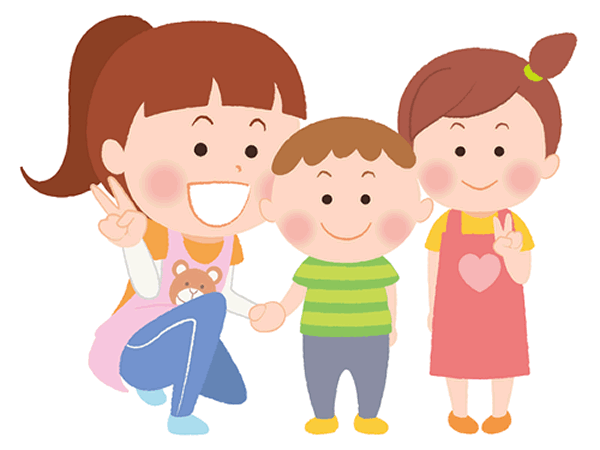

療育と教育の融合と、そのバランスを図ることを目指します
日本という国における、セラピーの位置は非常に低いところにあり、提供される数も恐ろしく少ない現状にあります。それは、セラピーが必要ではないとか、価値がないとかではなく、制度として評価としての位置が極めて低く扱われていましたし、今現在、ネット社会ゆえセラピーの必要なデマンドサイドからセラピーに出会う確率が高まってきたとはいえ、その必要な絶対数には遠く及ばない状態です。なぜなのでしょうか？
「教育」と「療育」及び「福祉又は保育」の3つに分けて考えてみます。
時系列的に、多くのお子様にとって出会う確率の高いものは圧倒的に「教育」です。いわゆる定型発達のお子様にとって、教育以外関わりがないという事が殆どであり、教育を受けて社会に繋がっていきます。福祉や療育のお世話になることはほとんどありません。
しかし、図らずしも少し特異性を持ってしまったお子様にとって、教育の中に身を置くという事はとてもしんどいことで、黙り込んだり、不登校になったり、先生を困らせてみたり、かくれんぼしたりしてバランスを取って行くしかないのだと思います。
そうして教育から逃げてくる人たちを、まずは福祉が受け止めました。もちろん教育の中でもカウンセリング等の療育的・セラピー的要素を通過する人もいますが、少数であり且つ「通過する」というだけあって、セラピーが無責任にも方向を指図して処方箋を出してあとは養育や福祉に投げるというのが実情なのではないでしょうか。「あとは保護者様とのスキンシップです」などという無責任さに保護者様が絶望し、とりあえず受け止めてくれるのが福祉の大きなハンモックだったわけです。
福祉や保育はこうして大きくなり、さらに社会情勢の変化家族構成の変化（縮小化）によって、さらに追い風を受けて人数も予算もどんどん大きくなりました。そして、「てらぴぁぽけっと」も制度的にはこの福祉の仲間になります。

しかし、ここまで来て、一つ大事なことを忘れていました。
「お子様の気持ち」「言語表出のないお子様の反応」「お子様が抱えている生きづらさそのものの原因」が無視されているということです。社会的に養護が必要なのが「未成年」ですし、保護が必要だから「保護者」が必要なわけで、だから社会的な制度や要求保護者の都合で左右される部分があることを否定しません。それは仕方がないことだと思います。
しかし、なぜ療育やセラピーが必要であるかを鑑みた時に、最も必要なことは「お子様が困っていることを直す」という極めてシンプルなことであり、その視点であり、その視点にセラピストをはじめ廻りの大人たちが行動を合わせるという事だと考えております。それはとても困難です。だって、お子様はここが痛い、ここがわからない、ここに悩んでいるといえないのだから。
教育 はそのお子様に対して、基礎に戻ってやり直しなさいといい、場合によっては補習してあげますよという。福祉や保育は、そのお子様に対して、なんてかわいそうに、痛そうだから撫でてあげます、寄り添いましょう、他にも楽しいことがあるから出来る事をしようという。どちらも、根本的な答えになっていないのです。
お子様が今「痛い」という感情を表出したいのに、万人に通じる「痛い」という言語を用いることができない、それは大人たちがさんざん「痛いの？お痛なの？」とやんややんや僕の目の前で言っていたけど、何言っているのかさっぱりわからないし、おそらくそれが近しいものなんだろうと思って叫ぼうと思いますが、叫んだところでなんだかみんな困った顔をするんだよ、よくわからないな、、、という事に応えていかなければならないのです。
かつて、あるいは今現在もそうかもしれませんが、自閉症や障害は保護者の愛着不足という誤った概念があります。そこは現在では否定されているものの、お母様のお気持ちの中では、決して拭い去ることができない、どこかに引っかかっている概念で、だから多くのお母さまが自責の念に駆られています。
教育に言ったら怒られるし、福祉に行ったら自分たちの営業時間や、過度に迷惑をかけない限りは預かってくれる。最後の砦だった福祉も、ちょっと利用者様がぐずったり、変な反応を起こすと、「問題行動」という表現をされておっぽり出されます。セラピーという立ち位置は、そんな中で細々と運営され、少数の利用者様に支持され、行政が行う施設の中で、公平性を保つために多くの人に少ない回数で提供されてきました。

色々な考え方がありますが、基本的にセラピーはお子様の痛み、悩みに通じない回路に直接触れようとしている運動であることは間違いありません。教育は、痛み・悩みを低い点数から判断し、他の高い点数の子と同じことをゆっくりやる補習か、レベルを下げて行うクラス分けをして対応しました。福祉や保育は、痛み・悩みをかわいそうなものと見立てて、痛みや悩みに同情したり、すり替えたり、表層を撫でていく対応をしました。痛み・悩みに直接触れなければならないのに、それを巧みに回避してきたのです。教育は傲慢で福祉は怠惰でした。
しかし、セラピー自身にも問題がないわけではありません。それは自らが閉鎖的であったという事に尽きます。制度化される福祉に寄っていくこともなく、自らを大きく表現しようともせず、医療や教育、社会福祉法人や行政機関の一部としてひっそりとたたずむか流派にわかれて細々と自由な活動をしていたにすぎません。それに「専門性」というベールをかぶって安心して、あとは保護者任せ。これではセラピーの為のセラピーでしかありません。
てらぴぁぽけっと、とはterapia (=イタリア語でセラピーのこと）がたくさんあるpocket(＝英語でポケット）です。たくさんのセラピーをポケットに詰めて、少しずつ（スモールステップ）、確実に痛みに届くように、段階的に（825段階）ご提供をさせて頂き、さらに福祉の制度に乗せて、多くの方に安価に届けられるような仕組みにしました。
セラピーが福祉の文脈に入ること（セラピーはもっと高尚なものよ、短時間で保護者と一緒じゃないとだめ等条件が付きすぎる）に抵抗感がある現状を打破します。福祉がセラピーを学ぶこと（安全に預かるだけでも大変なのに、もう勉強なんてしていられないわよ）に抵抗感がある怠惰性を打破します。教育の体系が、お子様の今に必要なものを提供できない（100点がダメなら30点でいい、そんな一つの座標軸じゃない）硬直性を打破します。
全てのお子様に良質なセラピーを、たくさん、小さく、確実に。沿う願いを込めて毎日汗を流しております。
お子様に内在する支援のヒントを探し、優しくセラピーを行います
内在するヒント、って結構今までも言われてきたことで、お母様からすれば、もう飽き飽きしているものもあるかと思います。てらぴぁぽけっとでは、内在なんだけども、感情を排して行動ベースでお子様のヒントを探します。お気持ちを慮っても、愛着が先だと考えても結局主観的なことなので、当のお子様にとっては「？？」というものばかりだからです。
例えば、こんな事例を考えてみましょう。
- 落ち着いて座っていられず、あちこっちに逃走してしまう
- 隙あらば、タンスや棚の上に登ってしまう
- ちょっとでも気に入らないとすぐ叫んだり、叩いたりする
当然お母様としては、悩んでしまい、おちおち外に連れ出せない、私のストレスが溜まるわとこれを福祉の用語に変換すると「問題行動」となるわけで、これを改善しようとなるわけです。そして、原因を突き詰めていきますが、だいたい以下のような原因を考え出します。
- 集中力がないのよ
- 愛情が足りないのよ
- 負けん気が強いからすぐかみつくのよ
一見正しそうに見えますし、もしかしたら正解があるかもしれません。
しかしこれを進めていくと
- 負けん気が強いから、攻撃したり言葉が汚い
- 愛情が足りないから、欠乏を埋めようとして攻撃する
- 能力不足だから、何もできない
などという個人攻撃に繋がってしまいます。
人間の行動を、その背景にある心理状態や仮説で立てた原因の単なる症候とみると、
- 攻撃したり言葉が汚いのは、負けん気が強いから
- 愛情の欠乏を埋めようとして他人を攻撃するのは、母親の愛情が足りないから
- 何もできないのは、能力不足だから
となってしまい、結局は自分たちが立てた仮説（負けん気が強い等）を自分たちで治療しようとする、ただのマッチポンプなわけです。お子様はそんな大人たちの無責任な言動を、にこにこしたり、走りわまって聞いているだけでやがてそれがお子様自信に治療としてやってくるという、あまりにも暴力的な事態を招くのです。
そうならないために、てらぴぁぽけっとでは、あくまでも行動だけを見てお見立てや計測を行い、行動に介入しながら、お子様の生きづらさを改善していこうと考えております。
お子様に内在するヒントとは、お子様が一生懸命表現して表層に今出ているもの全てであり、余計な感情を入れずにその表層を読み取っていくこと、指導員も一緒になってその表層に体や行動や言動を合わせていくことでわかってくる何かです。なのでヒントは常に動いているダイナミズムであり、アセスメントやスケールに閉じ込められるものではないと信じて行動しております。
発達スケールと照らし合わせて、お子様を目標とする位置へ導きます
825段階の支援スケールを駆使して、きょうもてらぽけ指導員と児童発達支援管理責任者、及びセラピストがお子様の行動に見られる療育のヒントを探し続けております。
スケールは、あくまでも補助具。お子様を「わかる」ようにするためにスケールを用い、お子様はそのスケールをいとも簡単に「飛び越え」ていくものなので、スケールに固執せず、お子様の今を見つめ関わり続けます。その持続がてらぴぁぽけっとの生命線です。